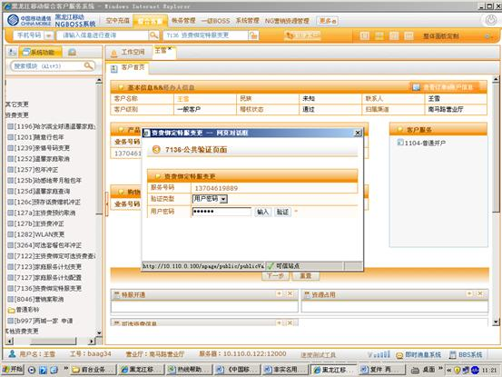
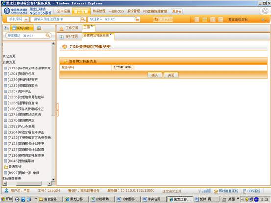
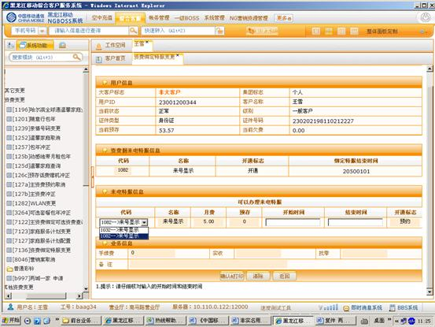
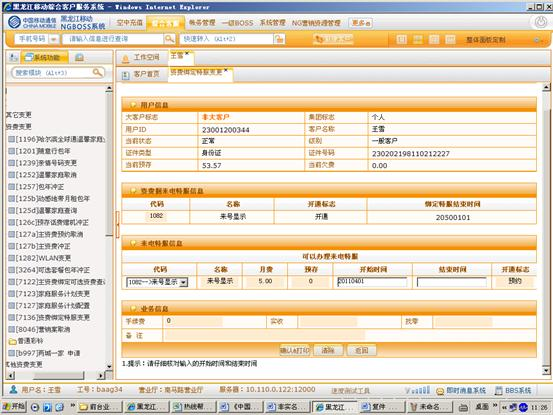
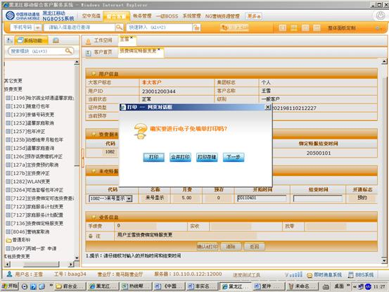

1、进入方式
在“请输入手机号码查询”处输入客户的手机号码，点击查询按钮，点击综合客服-资费变更-资费绑定特服变更，或在“快速转入”处输入代码7136资费绑定特服变更，点击“回车”确定。
2、界面形式及操作步骤说明
（1）在“请输入手机号码查询”处输入客户的手机号码，点击查询按钮，点击综合客服-资费变更-资费绑定特服变更，或在“快速转入”处输入代码7136资费绑定特服变更，点击“回车”确定。点击“输入”，由客户通过密码小键盘输入服务密码。

（2）进入资费绑定特服操作界面，点击“确认”。

（3）在“来电特服信息”处选择可以办理来电特服的代码。

（4）在“开始时间”处填写预约来电的开始时间，此处为必填的；“结束时间” 是选填的，在用户没有要求预约结束特服的情况下是不必填写的。

（5）点击“确认&打印”，再根据客户本次是否办理多个业务，点击“打印”或“合并打印”或“打印存储”。

（6）点击“确定”提交本次操作。